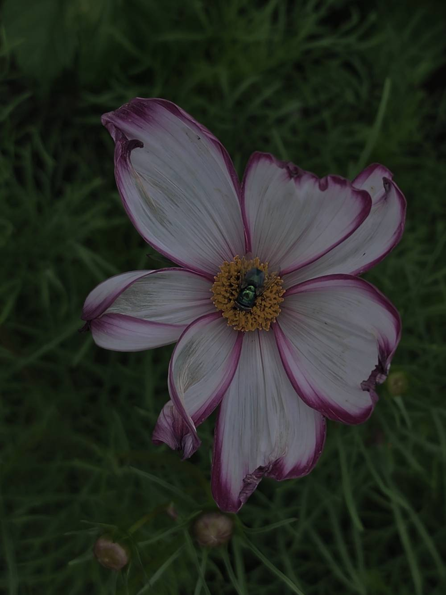
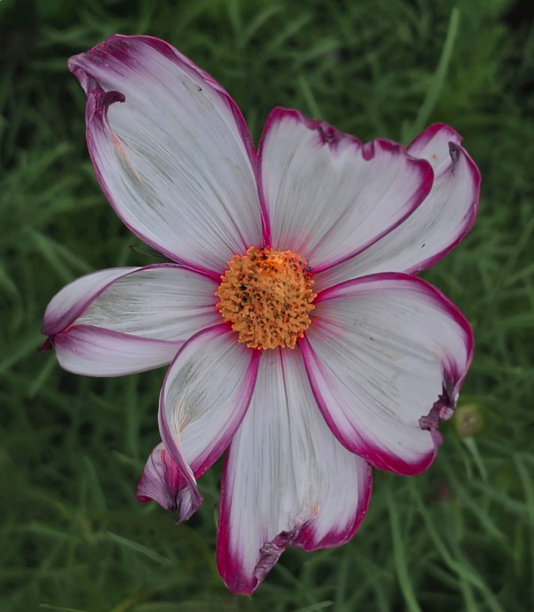
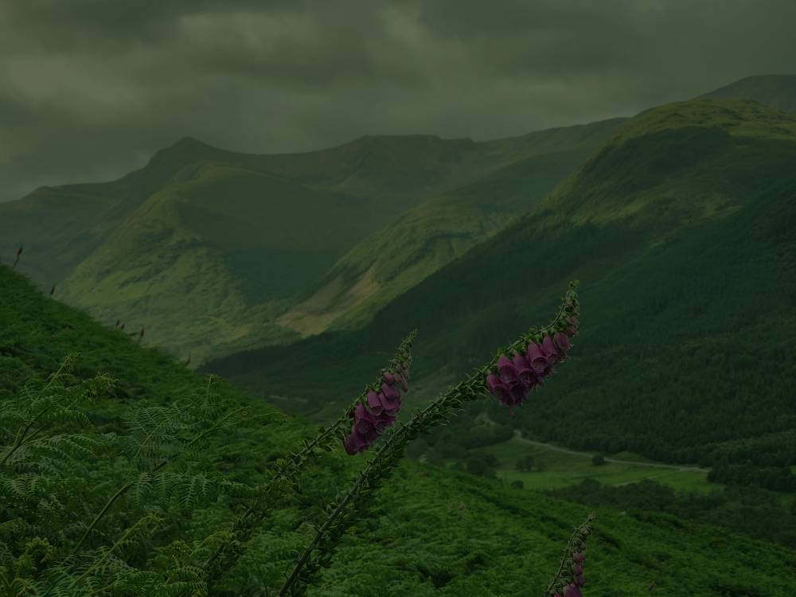
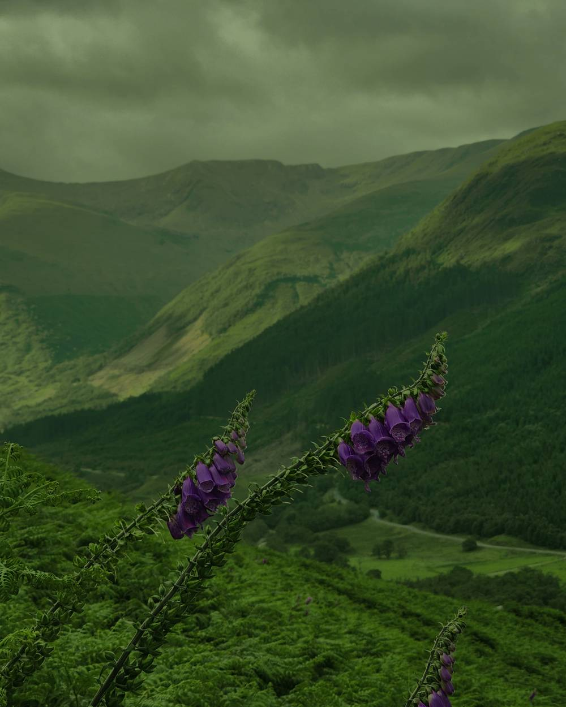
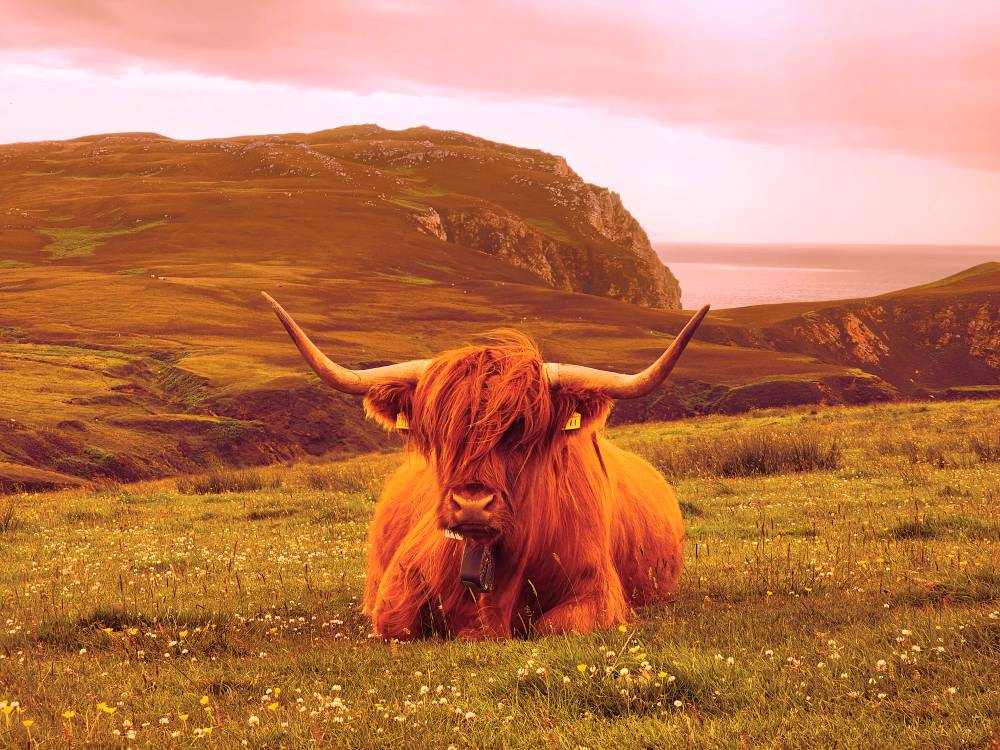
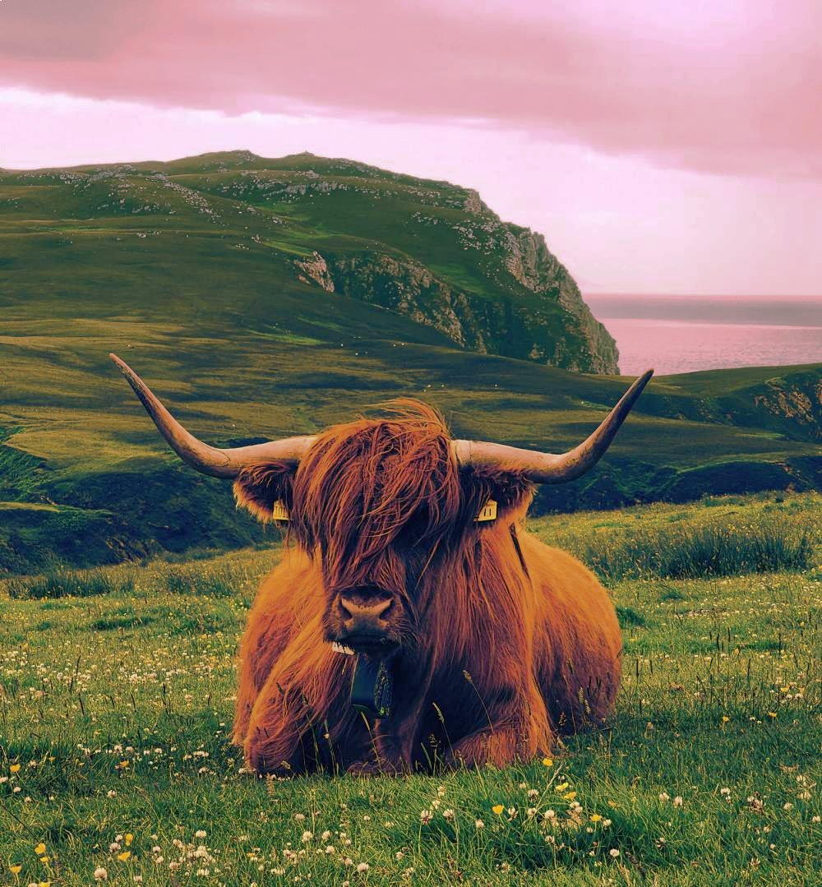

Bildredigering
Blomma


Bild 2 är den klara bilden efter redigering. I första steget redigerade jag bort flugan med hjälp av stämpel och patchverktyg. För att få bort det mörka i bilden har jag ökat exponeringer. Genom att öka kontrasten har jag fått blomman mer framträdande och skillnaden mellan de ljusa och mörka partierna blir större. Jag har förstärkt färgerna för att få den rosa kanten att bli starkare, samt så har jag gjort den gula mitten mer intensiv. Ökad skärpa har gett en mer framträdande struktur i blomman. En knopp som fanns i nedankanten av bilden har tagits bort med stämpel och patchverktyg.
Blomma bland berg


Bild 2 är mitt resultat. Jag började med att beskära bilden för att få blommorna i tydligare fokus, och för en känsla av att blommorna kommer "närmre". Genom att öka kontrasten sticker blommorna ut mer från den gröna bakgrunden. Jag har ökat mättnaden för att få mer liv i bilden. Jag har ändrat färgerna i bilden avseende blommorna genom ökad mättnad. Jag identifierade färgen som fanns i blommorna och sen justerade jag nyans och mättnad.
Highland cattle


I bild 2 har jag minskat värmen för att få bort den gulaktiga tonen som finns i hela motivet. Jag har lagt in mer blått i bilden och genom att öka nivån när det kommer till magenta får man fram den lite rosa himlen. Kontrasten har ökats för att få fram mer detaljer i gräset och i djuret och så att kon sticker ut i bilden och blir central. Genom att justera skärpan förstärktes detaljerna ytterligare. Bilden är beskuren för att djuret skall komma "närmre", det skapar dramatik och att fokus dras dit.